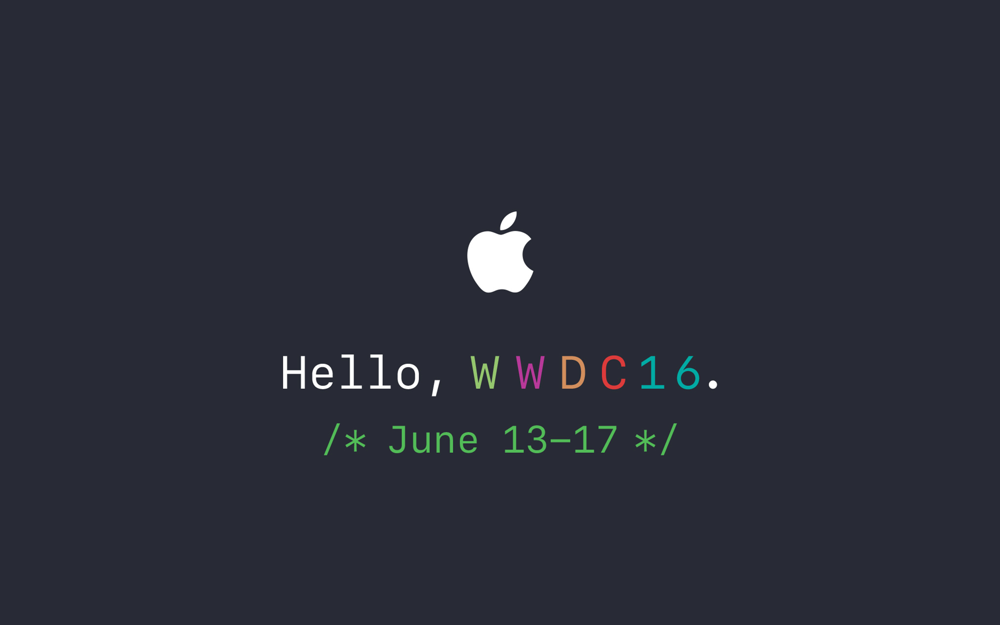

简单介绍一些MarkDown的常用语法.
MarkDown语法简述
下面只是常用的语法,可参考如下两个博客,欢迎补充!
http://ibruce.info/2013/11/26/markdown/
https://daringfireball.net/projects/markdown/syntax
斜体&粗体
1
2
| "*"或者"_"都可以,一个表示斜体,两个表示粗体,可嵌套
如 : *趣分期* _趣分期_ **趣分期** __趣分期__ ***趣分期*** ___趣分期___
|
效果如下 : 趣分期 趣分期 趣分期 趣分期 趣分期 趣分期
分割线
1
| 三个或者更多的"*"、"_"或者"-",必须单独一行,效果如图:
|
引用
1
2
3
4
5
6
7
8
9
10
| ">",可以多个连写,效果如下:
> 我的 :
>
>> 玩具 :
>>
>>> 洋娃娃 :
>>>
>>> 足球 :
>>
>> 代码 :
|
我的 :
玩具 :
洋娃娃 :
足球 :
代码 :
标题
1
2
3
4
5
6
| # 一级标题
## 二级标题
### 三级标题
#### 四级标题
##### 五级标题
###### 六级标题
|
一级标题
二级标题
三级标题
四级标题
五级标题
六级标题
无序列表
1
2
3
4
5
6
7
8
9
10
| "+"、"-"、"*"都可以,混合时可表示多级列表,混合时符号前后空格不能省略,不同平台所需空格数量不定 :
+ 无序列表
- 无序列表
* 无序列表
- 嵌套列表
+ 嵌套列表
+ 嵌套列表
- 嵌套列表
* 嵌套列表
- 嵌套列表
|
有序列表
1
2
3
4
5
| 数字不能省略但可无序，点号之后的空格不能少
1. 有序列表
3. 有序列表
2. 有序列表
8. 有序列表
|
- 有序列表
- 有序列表
- 有序列表
- 有序列表
超链接
1
| [我是超链接](http://fsthatone.github.io/ "我的")
|
我是超链接
图片链接
1
2
3
|
 即
<img src="./AR72014-WWDC-2016-wallpaper-desktop.png" width="200" height="350" />
|

代码块
1
| 数字1前边的点,三个,中间写代码块的内容,或者行前打四个空格 :
|
@objc public protocol DataModelConfigProtocol : NSObjectProtocol{
optional func configDict() -> [String:String]?
}
效果如下 :
1
2
3
| @objc public protocol DataModelConfigProtocol : NSObjectProtocol{
optional func configDict() -> [String:String]?
}
|
行内代码语句
1
2
3
4
|
一个或者两个点都可以 :
``我是代码`` : `@objc public protocol DataModelConfigProtocol : NSObjectProtocol`
|
我是代码 : @objc public protocol DataModelConfigProtocol : NSObjectProtocol
表格
1
2
3
4
5
6
7
8
9
10
11
| | Tables | Are | Cool |
| ------------- |:-------------:| -----:|
| col 3 is | right-aligned | $1600 |
| col 2 is | centered | $12 |
| zebra stripes | are neat | $1 |
或者
dog | bird | cat
----|------|----
foo | foo | foo
bar | bar | bar
baz | baz | baz
|
–:/:–/:–: 分别代表居右,居左,居中
| Tables |
Are |
Cool |
| col 3 is |
right-aligned |
$1600 |
| col 2 is |
centered |
$12 |
| zebra stripes |
are neat |
$1 |
| dog |
bird |
cat |
| foo |
foo |
foo |
| bar |
bar |
bar |
| baz |
baz |
baz |
转义字符
1
2
3
4
5
6
7
8
9
10
11
12
13
| Markdown中的转义字符为\，转义的有：
\\ 反斜杠
\` 反引号
\* 星号
\_ 下划线
\{\} 大括号
\[\] 中括号
\(\) 小括号
\# 井号
\+ 加号
\- 减号
\. 英文句号
\! 感叹号
|